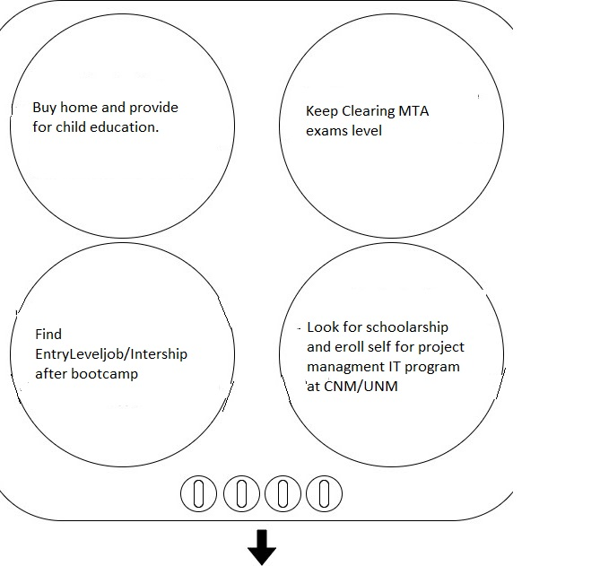

Last updated: July 10th, 2019
Career Buddy: Daniel Juarez
Visual
20% Auditory
50% Visual
30% Tactile
My project is to stop food wastage.I want to build website which help me keep track of events store and Restrauants discarding food daily base With website I will hire volunteer applied online for one who want to be part of organization.
Currently I am student and mother of 19 month boy enjoying all cute moments and love taking care of him.
I want to provide future to him and other family member so, I want to be get a employed after my Deep dive program at CNM Ingenuity.
I want to work with employee to explore professional world for next couple of years.
Version 1
Hi my name is Rishita Hariyani.I would Like to built a website which will help me to serve community by tracking
about events/parties from where I can collect fresh and good food to serve needfuls.
Website will also help me to hire volunteer works also. I will do with use of technology and community.Are you doing this?
Version 2
Coming Up
I learned basic html,css and my sql . Also did lot of brain storming activity. After attending first week of class it build my confidence toward the filed. I love coding because it bring out my creative and analytical side of me.
This week developed understanding about Object-oriented.
Developed first step toward personal project.Also, brainstormed mind and build patience while debuging errors.
This week we were grouped with our capstone team member.
For activity we played Forbidden Island Game its was fun.
Playing this game we learned about each other, create collaborated strategies and develop skill to work together.
This week we did many activity and learn about how we can market ourself and stove activity to figure out goals we keep on working
| Tittle | Professional | Personal |
| Identity | Rishita Hariyani | Rishita |
| Channels | Facebook,Instagram | |
| Content | Educator ,Customer service oriented | Global Stuff,Recipes odd |